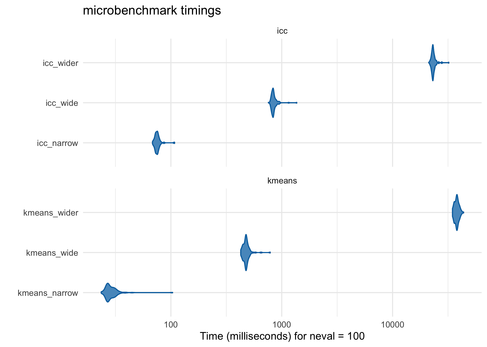

partition is a fast and flexible framework for agglomerative partitioning. partition uses an approach called Direct-Measure-Reduce to create new variables that maintain the user-specified minimum level of information. Each reduced variable is also interpretable: the original variables map to one and only one variable in the reduced data set. partition is flexible, as well: how variables are selected to reduce, how information loss is measured, and the way data is reduced can all be customized.
Installation
You can install the partition from CRAN with:
install.packages("partition")Or you can install the development version of partition GitHub with:
# install.packages("remotes")
remotes::install_github("USCbiostats/partition")Example
library(partition)
set.seed(1234)
df <- simulate_block_data(c(3, 4, 5), lower_corr = .4, upper_corr = .6, n = 100)
# don't accept reductions where information < .6
prt <- partition(df, threshold = .6)
prt
#> Partitioner:
#> Director: Minimum Distance (Pearson)
#> Metric: Intraclass Correlation
#> Reducer: Scaled Mean
#>
#> Reduced Variables:
#> 1 reduced variables created from 2 observed variables
#>
#> Mappings:
#> reduced_var_1 = {block2_x3, block2_x4}
#>
#> Minimum information:
#> 0.602
# return reduced data
partition_scores(prt)
#> # A tibble: 100 × 11
#> block1_x1 block1_x2 block1_x3 block2_x1 block2_x2 block3_x1 block3_x2
#> <dbl> <dbl> <dbl> <dbl> <dbl> <dbl> <dbl>
#> 1 -1.00 -0.344 1.35 -0.526 -1.25 1.13 0.357
#> 2 0.518 -0.434 -0.361 -1.48 -1.53 -0.317 0.290
#> 3 -1.77 -0.913 -0.722 0.122 0.224 -0.529 0.114
#> 4 -1.49 -0.998 0.189 0.149 -0.994 -0.433 0.0120
#> 5 0.616 0.0211 0.895 1.09 -1.25 0.440 -0.550
#> 6 0.0765 0.522 1.20 -0.152 -0.419 -0.912 -0.362
#> 7 1.74 0.0993 -0.654 -1.26 -0.502 -0.792 -1.03
#> 8 1.05 2.19 0.913 0.254 0.328 -1.07 -0.976
#> 9 -1.07 -0.292 -0.763 0.437 0.739 0.899 -0.342
#> 10 -1.02 -0.959 -1.33 -1.57 -1.11 0.618 0.153
#> # ℹ 90 more rows
#> # ℹ 4 more variables: block3_x3 <dbl>, block3_x4 <dbl>, block3_x5 <dbl>,
#> # reduced_var_1 <dbl>
# access mapping keys
mapping_key(prt)
#> # A tibble: 11 × 4
#> variable mapping information indices
#> <chr> <list> <dbl> <list>
#> 1 block1_x1 <chr [1]> 1 <int [1]>
#> 2 block1_x2 <chr [1]> 1 <int [1]>
#> 3 block1_x3 <chr [1]> 1 <int [1]>
#> 4 block2_x1 <chr [1]> 1 <int [1]>
#> 5 block2_x2 <chr [1]> 1 <int [1]>
#> 6 block3_x1 <chr [1]> 1 <int [1]>
#> 7 block3_x2 <chr [1]> 1 <int [1]>
#> 8 block3_x3 <chr [1]> 1 <int [1]>
#> 9 block3_x4 <chr [1]> 1 <int [1]>
#> 10 block3_x5 <chr [1]> 1 <int [1]>
#> 11 reduced_var_1 <chr [2]> 0.602 <int [2]>
unnest_mappings(prt)
#> # A tibble: 12 × 4
#> variable mapping information indices
#> <chr> <chr> <dbl> <int>
#> 1 block1_x1 block1_x1 1 1
#> 2 block1_x2 block1_x2 1 2
#> 3 block1_x3 block1_x3 1 3
#> 4 block2_x1 block2_x1 1 4
#> 5 block2_x2 block2_x2 1 5
#> 6 block3_x1 block3_x1 1 8
#> 7 block3_x2 block3_x2 1 9
#> 8 block3_x3 block3_x3 1 10
#> 9 block3_x4 block3_x4 1 11
#> 10 block3_x5 block3_x5 1 12
#> 11 reduced_var_1 block2_x3 0.602 6
#> 12 reduced_var_1 block2_x4 0.602 7
# use a lower threshold of information loss
partition(df, threshold = .5, partitioner = part_kmeans())
#> Partitioner:
#> Director: <custom director>
#> Metric: <custom metric>
#> Reducer: <custom reducer>
#>
#> Reduced Variables:
#> 2 reduced variables created from 7 observed variables
#>
#> Mappings:
#> reduced_var_1 = {block3_x1, block3_x2, block3_x5}
#> reduced_var_2 = {block2_x1, block2_x2, block2_x3, block2_x4}
#>
#> Minimum information:
#> 0.508
# use a custom partitioner
part_icc_rowmeans <- replace_partitioner(
part_icc,
reduce = as_reducer(rowMeans)
)
partition(df, threshold = .6, partitioner = part_icc_rowmeans)
#> Partitioner:
#> Director: Minimum Distance (Pearson)
#> Metric: Intraclass Correlation
#> Reducer: <custom reducer>
#>
#> Reduced Variables:
#> 1 reduced variables created from 2 observed variables
#>
#> Mappings:
#> reduced_var_1 = {block2_x3, block2_x4}
#>
#> Minimum information:
#> 0.602partition also supports a number of ways to visualize partitions and permutation tests; these functions all start with plot_*(). These functions all return ggplots and can thus be extended using ggplot2.
plot_stacked_area_clusters(df) +
ggplot2::theme_minimal(14)Performance
partition has been meticulously benchmarked and profiled to improve performance, and key sections are written in C++ or use C++-based packages. Using a data frame with 1 million rows on a 2017 MacBook Pro with 16 GB RAM, here’s how each of the built-in partitioners perform:
large_df <- simulate_block_data(c(3, 4, 5), lower_corr = .4, upper_corr = .6, n = 1e6)
basic_benchmarks <- microbenchmark::microbenchmark(
icc = partition(large_df, .3),
kmeans = partition(large_df, .3, partitioner = part_kmeans()),
minr2 = partition(large_df, .3, partitioner = part_minr2()),
pc1 = partition(large_df, .3, partitioner = part_pc1()),
stdmi = partition(large_df, .3, partitioner = part_stdmi())
)
ICC vs K-Means
As the features (columns) in the data set become greater than the number of observations (rows), the default ICC method scales more linearly than K-Means-based methods. While K-Means is often faster at lower dimensions, it becomes slower as the features outnumber the observations. For example, using three data sets with increasing numbers of columns, K-Means starts as the fastest and gets increasingly slower, although in this case it is still comparable to ICC:
narrow_df <- simulate_block_data(3:5, lower_corr = .4, upper_corr = .6, n = 100)
wide_df <- simulate_block_data(rep(3:10, 2), lower_corr = .4, upper_corr = .6, n = 100)
wider_df <- simulate_block_data(rep(3:20, 4), lower_corr = .4, upper_corr = .6, n = 100)
icc_kmeans_benchmarks <- microbenchmark::microbenchmark(
icc_narrow = partition(narrow_df, .3),
icc_wide = partition(wide_df, .3),
icc_wider = partition(wider_df, .3),
kmeans_narrow = partition(narrow_df, .3, partitioner = part_kmeans()),
kmeans_wide = partition(wide_df, .3, partitioner = part_kmeans()),
kmeans_wider = partition(wider_df, .3, partitioner = part_kmeans())
)
For more information, see our paper in Bioinformatics, which discusses these issues in more depth (Millstein et al. 2020).
Contributing
Please read the Contributor Guidelines prior to submitting a pull request to partition. Also note that this project is released with a Contributor Code of Conduct. By participating in this project you agree to abide by its terms.